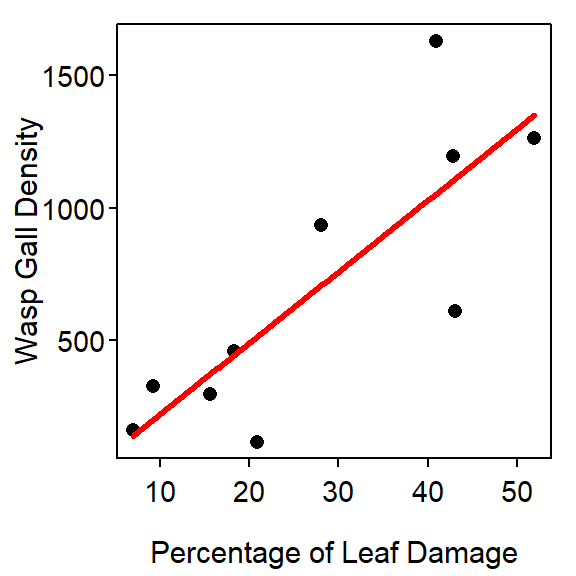
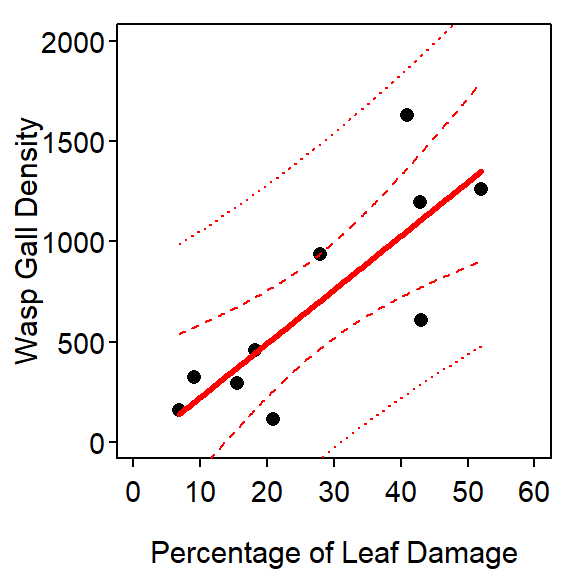
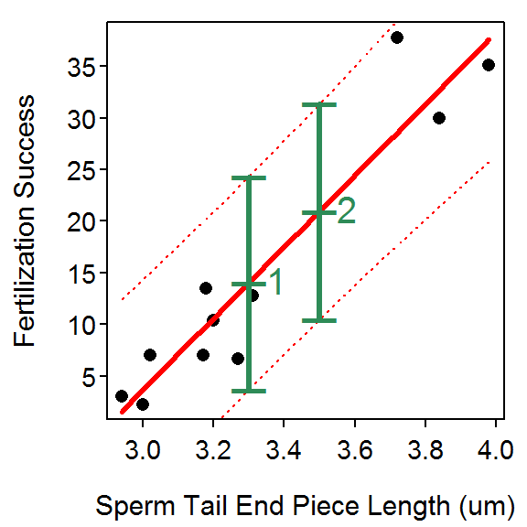
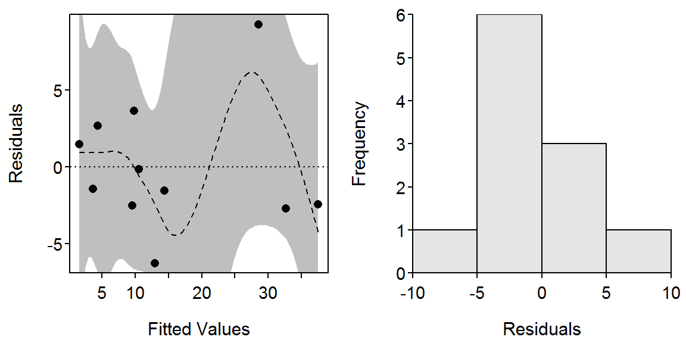
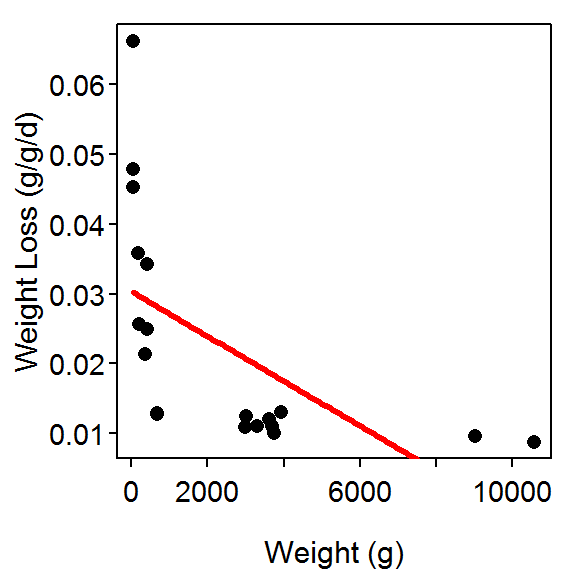
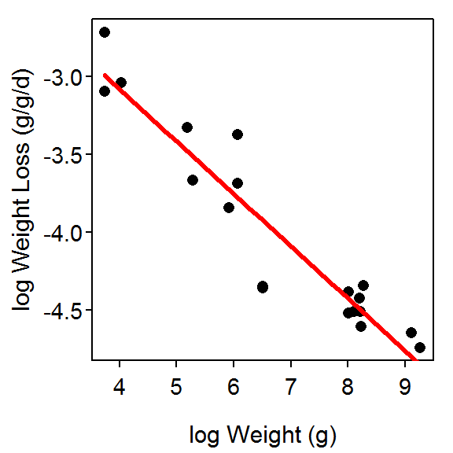
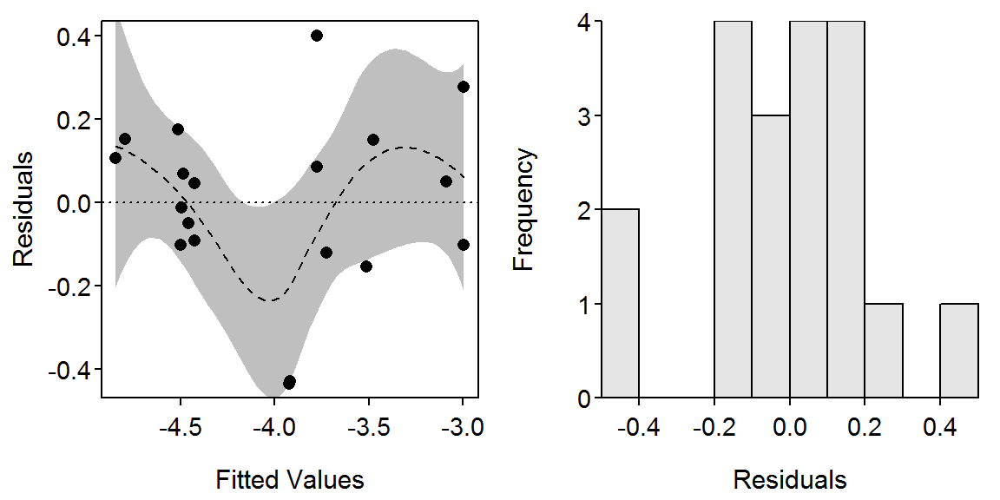

> library(NCStats)Vladic et al. (2002) recorded (in SalmonSperm.csv) the probability of successful egg fertilization (fert.success) and the length of sperm tail end piece (step.len). They asked “Are fertilization success and length of sperm related?”
> setwd("C:/aaaWork/Web/GitHub/NCMTH207/modules/SLRegression")
> ss <- read.csv("SalmonSperm.csv")
> ss <- ss[-c(1,10,11),] # only for class demo purposes
> str(ss)'data.frame': 11 obs. of 3 variables:
$ step.len : num 2.94 3 3.02 3.17 3.18 3.2 3.27 3.31 3.72 3.84 ...
$ fert.succ: num 3 2.2 7 7 13.5 10.4 6.7 12.8 37.8 30 ...
$ mat : Factor w/ 2 levels "Adult","Parr": 2 2 1 2 1 1 1 1 2 2 ...> xlbl <- "Sperm Tail End Piece Length (um)"
> ylbl <- "Fertilization Success"> ( lm1 <- lm(fert.succ~step.len,data=ss) )Coefficients:
(Intercept) step.len
-100.21 34.61 > fitPlot(lm1,xlab=xlbl,ylab=ylbl,main="")
> predict(lm1,data.frame(step.len=3.5)) 1
20.92912 > summary(lm1)Coefficients:
Estimate Std. Error t value Pr(>|t|)
(Intercept) -100.205 13.015 -7.699 3.00e-05
step.len 34.610 3.889 8.901 9.35e-06
Residual standard error: 4.366 on 9 degrees of freedom
Multiple R-squared: 0.898, Adjusted R-squared: 0.8866
F-statistic: 79.22 on 1 and 9 DF, p-value: 9.35e-06 > confint(lm1) 2.5 % 97.5 %
(Intercept) -129.64815 -70.76202
step.len 25.81336 43.40619> fitPlot(lm1,interval="both",xlab=xlbl,ylab=ylbl,main="")
> predict(lm1,data.frame(step.len=3.5),interval="confidence") fit lwr upr
1 20.92912 17.5967 24.26153> predict(lm1,data.frame(step.len=3.5),interval="prediction") fit lwr upr
1 20.92912 10.50502 31.35321> predictionPlot(lm1,data.frame(step.len=c(3.3,3.5)),interval="prediction",
xlab=xlbl,ylab=ylbl,main="")
obs step.len fit lwr upr
1 1 3.3 14.00716 3.687506 24.32682
2 2 3.5 20.92912 10.505016 31.35321> anova(lm1)Analysis of Variance Table
Response: fert.succ
Df Sum Sq Mean Sq F value Pr(>F)
step.len 1 1510.23 1510.23 79.219 9.35e-06
Residuals 9 171.58 19.06 > residPlot(lm1,main="")
> adTest(lm1$residuals)Anderson-Darling normality test with x
A = 0.4022, p-value = 0.2962> outlierTest(lm1)
No Studentized residuals with Bonferonni p < 0.05
Largest |rstudent|:
rstudent unadjusted p-value Bonferonni p
12 3.717896 0.0058892 0.064781Croxall (1982) examined the weight loss of adult petrels during periods of egg incubation. He examined 13 species but some had measurements for both sexes such that 19 measurements are found in Petrels.csv. For each measurement the mean initial weight (g) and mean weight lost (g/g/d) were recorded. Determine if the mean initial weight significant explains variability in mean weight lost.
> petrels <- read.csv("Petrels.csv")
> str(petrels)'data.frame': 19 obs. of 4 variables:
$ species : Factor w/ 13 levels "Diomedea chrysostoma",..: 2 2 4 4 1 1 3 3 3 9 ...
$ sex : Factor w/ 4 levels "both","female",..: 3 2 3 2 3 2 3 2 1 3 ...
$ weight : int 10577 9022 3922 3694 3751 3624 3305 3000 2996 668 ...
$ weight.loss: num 0.0087 0.0096 0.013 0.011 0.01 0.012 0.011 0.0125 0.0109 0.0128 ...> lm1 <- lm(weight.loss~weight,data=petrels)
> fitPlot(lm1,xlab="Weight (g)",ylab="Weight Loss (g/g/d)",main="")
> residPlot(lm1,main="")> with(petrels,max(weight)/min(weight))[1] 251.8333> ## transChooser(lm1) # interactive, results not shown
> petrels$log.wt <- log(petrels$weight)
> petrels$log.wtloss <- log(petrels$weight.loss)
> lm2 <- lm(log.wtloss~log.wt,data=petrels)
> fitPlot(lm2,xlab="log Weight (g)",ylab="log Weight Loss (g/g/d)",main="")
> residPlot(lm2,main="")
> adTest(lm2$residuals)Anderson-Darling normality test with x
A = 0.3881, p-value = 0.3514> anova(lm2)Analysis of Variance Table
Response: log.wtloss
Df Sum Sq Mean Sq F value Pr(>F)
log.wt 1 6.5113 6.5113 140.65 1.204e-09
Residuals 17 0.7870 0.0463 > summary(lm2)Coefficients:
Estimate Std. Error t value Pr(>|t|)
(Intercept) -1.73403 0.19792 -8.761 1.04e-07
log.wt -0.33632 0.02836 -11.860 1.20e-09
Residual standard error: 0.2152 on 17 degrees of freedom
Multiple R-squared: 0.8922, Adjusted R-squared: 0.8858
F-statistic: 140.6 on 1 and 17 DF, p-value: 1.204e-09 > confint(lm2) 2.5 % 97.5 %
(Intercept) -2.1516113 -1.3164546
log.wt -0.3961507 -0.2764885> ( p.log.wtloss <- predict(lm2,data.frame(log.wt=log(5000)),interval="confidence") ) fit lwr upr
1 -4.598532 -4.746569 -4.450495> exp(p.log.wtloss)*exp(anova(lm2)[2,3]/2) fit lwr upr
1 0.01030234 0.008884726 0.01194614